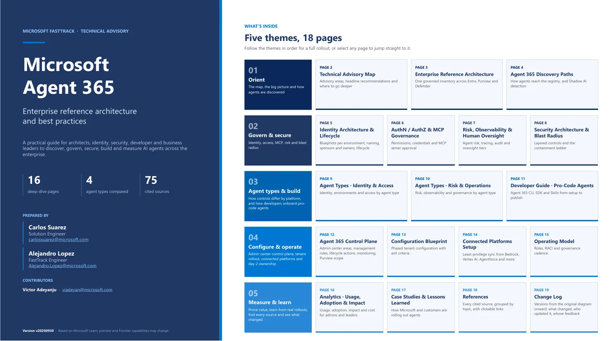

Your browser can't show PDFs inline. Download the advisory or open it in your device's PDF viewer.
Microsoft FastTrack · Technical advisory
Enterprise reference architecture and best practices for architects, identity, security, developer and business leaders to discover, govern, secure, build and measure AI agents across the enterprise.

Your browser can't show PDFs inline. Download the advisory or open it in your device's PDF viewer.